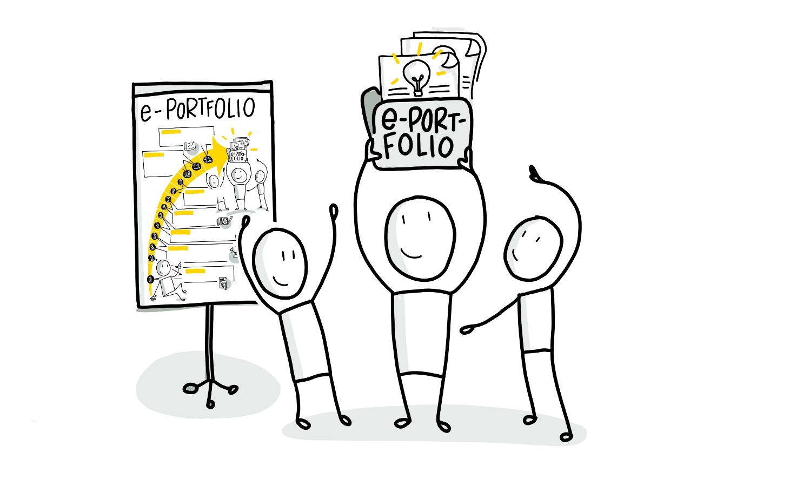

Learning area 7 - Feedback / Lessons learned
Learning area 7 - Feedback / Lessons learned
Fördern des Feedbacks und Austausch über die Themen im ePortfolio sowie Lessons learned (Woche 12
Struktur:
Abschlusswoche 12
- A) Brief instructions for feedback motivation and reflection
- B) Continued exchange of topics and collecting ideas for community expansion C) Lessons learned: discuss successes and challenges as well as possible next steps

Week 12 - Retrospektive
Abschlusswoche 12
A) Kurz-Anleitung zur Feedbackmotivation und Reflexion | (ca. 20 Minuten
Heute startet Ihr in Eure Abschlusswoche - dazu macht als erstes einen kleinen Perspektivwechsel: Versucht Euch kurz in die Lage eines Eurer Circle-Mitglieder*innen zu versetzen und überlegt Euch aus seiner/ihrer Sicht, warum Ihr auf sein/ihr ePortfolio schauen solltet. Welche Inhalte würdet Ihr besonders herausstellen, welchen Mehrwert für Leser*innen betonen, vielleicht auch, wo seht Ihr Anknüpfungspunkte zu anderen ePortfolios aus Eurer Runde? Welche Inhalte, Beiträge oder Diskussionen regen dazu an, ein Feedback im ePortfolio zu hinterlassen? Tauscht Euch dazu untereinander aus und haltet entstandene, hilfreiche Argumente gegenseitig fest.
B) Weiterführender Themenaustausch und Ideensammlung für Community-Ausbau | (ca. 15 Minuten)
Nehmt Euch zum Abschluss noch etwas Zeit dafür, Ideen oder sogar Themen zu sammeln, die für die weitere Vernetzung innerhalb und außerhalb Eurer entstandenen Community zum ePortfolio besonders hilfreich sein könnten. Haltet sie für Euch gemeinsam fest, um später daran wieder ansetzen zu können, denn Euer ePortfolio soll und darf natürlich gerne weitergeführt werden. Das bestärkt letztlich auch ein gutes Gefühl, wenn Ihr heute vom Circle auseinandergeht.
C) Lessons learned: Erfolge und Herausforderungen thematisieren sowie ggf. nächste Schritte | (ca. 25 Minuten)
Nun ist es als soweit. Die letzte Circle-Runde neigt sich nach 12 Wochen dem Ende und es wird Zeit, diese Wochen noch einmal Revue passieren zu lassen. Tauscht Euch gerne abschließend darüber aus, was für Euch die größten Erkenntnisse, Überraschungen oder Herausforderungen beim Führen Eures ePortfolios und dem gemeinsamen Austausch mit den anderen waren.
Nun ist es als soweit. DieDie folgenden Fragestellungen können dazu als Orientierungshilfe dienen:
Was nehmt Ihr als entscheidende Erfahrungswerte / Highlights aus den letzten Wochen mit?
Was waren die wichtigsten Meilensteine / Entwicklungsschritte für Euch?
Was ist vielleicht noch zu kurz gekommen im Circle oder beim Erstellen des ePortfolios?
Welche Pläne habt Ihr für Euer ePortfolio und was wollt Ihr damit als nächstes erreichen?
Welche Aktivitäten oder Voraussetzungen könnte es ggf. zukünftig geben, um Eure ePortfolios untereinander zu vernetzen oder fachlich sogar gemeinsam weiterzuführen?
Basic-Kata zum Abschluss (ca. 1 Stunde):
Der finale Pitch: Versuche Deine ePortfolio-Elemente und -Inhalte bis hierhin in maximal 3 Minuten vorzustellen. Versuche wichtige Portfolio-Merkmale herauszuarbeiten, die für den Anwender relevant sind und Themen-Highlights zu beschreiben, die Du besonders findest. Nutze das Ergebnis für die Vermarktung Deines e-Portfolios (z.B. als Kurzvideo, Infografik oder Textbeitrag).
Vertiefungs-Video-Kata zum Abschluss (ca. 1 Stunde):
Erstellt eine Video-Podcast-Folge: "Ein Brief an mich selbst". Diese dient als Rückblick (= Retrospektive) für den gesamten Circle: Was und wie habe ich in den letzten Wochen gelernt und was nehme ich mir als nächstes vor? Wie bin ich insgesamt bei meinem Thema vorangekommen? Und weiter gedacht: Wie sieht meine Arbeit am Thema in der Zukunft mit dem ePortfolio aus?
Großartig, Ihr habt es geschafft und den Lernpfad erfolgreich absolviert! Wir hoffen, dass Ihr die ePortfolio Learning-Methode auf diese Weise sehr gut kennen lernen konntet, schätzen gelernt habt und Eure ePortfolios auch in Zukunft weiterführen werdet. Wir wünschen dabei viel Freude und Erfolg!
Letzte kleine "Zusatzaufgabe" - Euren Erfolg feiern!
Idealerweise trefft Ihr Euch im Circle zu gegebener Zeit zu einem gemeinsamen kleinen Event, z.B. ein Abendessen oder Ähnliches und feiert das Erreichte. Ihr habt eine lange Zeit zusammen verbracht und gemeinsam recherchiert, Inhalte erstellt und diskutiert. Ihr habt ein Vertrauensverhältnis zueinander aufgebaut, das noch weit wertvoller sein kann, als die individuelle oder gemeinsame Arbeit am ePortfolio und von dem Ihr mit Sicherheit profitieren werdet.
Herta, Marcel und Stefan freuen sich außerdem auf Euer Feedback – denn wir wollen den ePortfolio Learning-Guide stetig weiter entwickeln und verbessern.
Vielen Dank dafür schon jetzt!